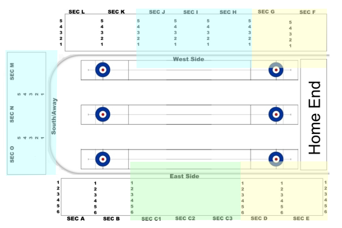

You have volunteered to get you and your 6 friends tickets for an up-comming Curling Nations preliminaries match, this weekend. The total amount of money you collected for this event is $210.32. You search the interwebs for tickets and discover the event is nearly sold out, and worse, there is no listing for the 7 seats you need . . .
Using your favourite language, your task is to use the sample ticket listings below to find all possible seating options for you and your friends. You must satisify either of these conditions:
Your seats are adjacent to eachother
1) GOOD BAD
..ooooooo.. Adjacent seats .oo.ooooo.. Seats are not adjacent
........... ...........
........... ...........
Your seats two up two adjacent rows and seats are adjacent. See the definition of Piggy back seats.
2) GOOD BAD
..ooo...... Adjacent .oooo...... Seats are directly above and below
.oooo...... and directly .oo........
........... below .o.........
2) GOOD BAD
........... ........... Seats are not adjacent on the lower
.oooo...... .ooooo..... row.
ooo........ .o...o.....
2) GOOD BAD
........... ........... Majority of the seats are not
oooo....... ..oooo..... directly across from eachother.
o.......... ooo........
It's very important to keep within the groups budget, try to use every penny if you can. Assume everyone prefers seats closer to the ends.
Blue sections are the best, but also the most expensive, green are mid range and yellow are the least expensive.

event,section,row,startseat,endseat,cost
curling,N,2,1,1,29.1
curling,G,2,6,6,22.02
curling,O,2,3,3,27.2
curling,N,2,3,3,28.1
curling,E,1,9,9,10.4
curling,H,2,13,13
curling,O,2,7,7,30
curling,E,1,7,7,10
curling,N,2,5,5,30
curling,L,1,5,6,44
curling,D,2,10,10,22
curling,E,1,11,11,10
curling,N,1,1,4,30
curling,D,1,1,1,10
curling,L,1,3,4,,44
curling,G,6,4,4,55
curling,A,2,3,6,40
curling,E,1,12,12,10
curling,E,1,1,1,5
curling,E,1,10,10,10
curling,E,1,3,3,10
curling,G,2,13,13
curling,E,1,8,8,10
curling,H,4,5,5,10
curling,K,3,9,11,28
curling,O,2,2,2,28
curling,L,2,1,4,31
curling,C,3,1,1,25
curling,D,2,7,9,45
curling,G,4,5,5,10
curling,L,1,7,9,60
curling,L,3,1,4,28.5
curling,H,3,2,2,25
curling,A,1,3,4,40
curling,E,1,13,13
curling,A,3,1,6,30
curling,E,1,4,4,55
curling,K,2,8,9,28
curling,G,4,1,4,10
curling,E,1,6,6,10
curling,G,4,3,3,10
curling,N,4,2,9,30
curling,L,3,5,7,28.5
curling,K,1,1,1,31
curling,H,4,3,3,10
curling,D,2,1,3,27.5
curling,G,3,2,2,25
curling,D,3,2,5,28
curling,O,2,1,1,30
curling,N,2,7,7,31
curling,L,2,6,9,31
curling,E,1,2,2,25
curling,N,2,6,6,31
curling,N,3,2,2,28
curling,O,2,6,6,30
curling,O,2,4,4,30
curling,O,2,5,5,30
curling,G,3,1,2,102
curling,K,2,9,11,28
curling,E,1,5,5,10
curling,C,2,1,4,20
curling,D,1,2,6,50
curling,D,4,1,3,25
curling,K,2,1,6,30
curling,K,2,1,2,28
curling,H,2,6,6,10
curling,H,6,4,4,55